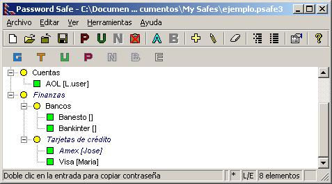
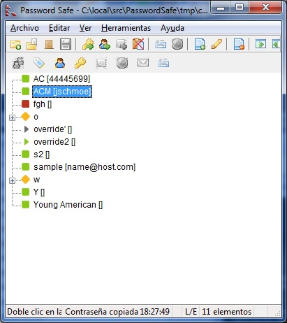

El menú ver controla las opciones de visualización disponibles. Puedes cambiar la forma en que se organizan los nombres de usuario y contraseñas de tus entradas: ya sea como una lista única (Lista plana) u organizado por categorías (Árbol jerarquizado). Puedes elegir si se muestra o no una barra de herramientas y en tal caso si se usan los iconos clásicos o nuevos. La propia barra de herramientas se puede personalizar. También puedes expandir o contraer todos los grupos que se muestran en la vista árbol jerarquizado, filtrar las entradas que se muestran según cualquier criterio, seleccione la fuente en la que se muestran las entradas y mostrar informes de combinar, comparar, importación y otras funciones avanzadas.
Expande todos los grupos, haciendo visibles todas las entradas (sólo en vista de árbol jerarquizado).
Contrae todos los grupos (sólo en vista de árbol jerarquizado).
Refresca la pantalla haciendo clic en F5 o en este elemento de menú.
Si está desmarcada la opción Guardar base de datos inmediatamente tras editar o añadir del menú Herramientas => Opciones => Copias de respaldo, los elementos modificados no se guardarán, pero se mostrarán coloreados. Ver la siguiente imagen

Listado de todas las entradas.
Al marcar este elemento, sólo se mostrarán los elementos con cambios.

Listado de todas las entradas cambiadas.
Nota: Mientras haya cambios que no haya guardado, habrá un "*" en la fila de estado.
Un "filtro" es un criterio (o conjunto de criterios) con que una entrada coincide o no. PasswordSafe te permite definir filtros y muestra sólo las entradas que coinciden con un filtro determinado. Tienes más información sobre cómo definir y usar filtros aquí.
Selecciona una fuente diferente para mostrar las entradas en la vista de lista o de árbol, y para mostrar las contraseñas en el diálogo agregar y editar entrada.
Muestra los resultados de las operaciones de combinar, comparar, importar y validar.